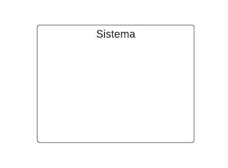
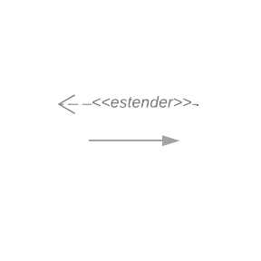

Casos de Uso
Introdução
Os Casos de Uso, também conhecidos como diagramas comportamentais na notação da UML, são empregados para descrever ações específicas que um sistema, ou conjunto de sistemas (denominado "subject"), deve realizar em colaboração com um ou mais usuários externos (os "actors"). Esta técnica, fundamental na modelagem de sistemas, permite aos participantes de diversas áreas contribuir com suas perspectivas únicas, enriquecendo o processo de desenvolvimento.[1]
Cada caso de uso busca proporcionar um resultado observável e valioso para os atores ou outros interessados, garantindo que as funcionalidades do sistema se alinhem efetivamente às necessidades dos usuários. Durante as sessões de desenvolvimento, ideias são livremente propostas e discutidas, com as mais adequadas sendo priorizadas para implementação, promovendo uma abordagem criativa e focada na resolução de problemas específicos dos usuários.
Metodologia
A metodologia para criar o diagrama de casos de uso inicia com a identificação dos atores, utilizando a persona Rafael Costa para definir as necessidades dos usuários finais. Em seguida, os casos de uso são determinados com base nos requisitos funcionais elicitados, descrevendo funcionalidades ou ações do sistema.
Cada caso de uso é detalhadamente descrito, incluindo fluxos básicos, alternativos e de exceção, além de pré-condições e pós-condições. Utilizamos a ferramenta Lucidchart para criar o diagrama visual, mostrando os atores, casos de uso e suas inter-relações.
Diagrama de Casos de Uso
A figura 1 demonstra o diagrama de casos de uso.
Figura 1: Diagrama de casos de uso 
Fonte: Johnny Lopes & Vitor Leonardo & José Souza, 2024
Legenda
Tabela 1: Legenda do diagrama de casos de uso
| Elemento | Nome | Função |
|---|---|---|
 |
Ator | Usuário do sistema, ou melhor, um tipo de usuário.[2] |
 |
Elipse (Caso de uso) | É uma tarefa ou uma funcionalidade realizada pelo ator.[2] |
|  | Retângulo (Sistema) | Usado para representar o sistema ou o bloco em análise. Ele envolve os casos de uso e atores relacionados.[3] |
|  | Flecha (Relação) | As flechas são usadas para representar as relações ou interações entre atores e casos de uso.[3] |
Fonte: Johnny Lopes, 2024
Especificação de Casos de Uso
As tabelas abaixo demonstram a especificação dos casos de usos.
A tabela 2 demonstra como deve ser feito cada especificação.
Tabela 2: Exemplo para especificação dos casos de uso
| Código do caso de uso | Nome do caso de uso |
|---|---|
| Descrição | Explicação detalhada do que o caso de uso realiza, incluindo qualquer interação específica com o usuário ou o sistema. |
| Ator | Quem ou o que interage diretamente com o caso de uso |
| Fluxo básico | Sequência principal de passos que descreve a interação padrão do ator com o sistema para atingir o objetivo do caso de uso. |
| Fluxos alternativos | Variantes do fluxo básico que ocorrem sob condições específicas, oferecendo caminhos alternativos ou adicionais. |
| Fluxo de exeção | Descreve o que acontece quando ocorre um erro ou uma situação excepcional durante a execução do caso de uso. |
| Pré-condições | Condições que devem ser verdadeiras ou cumpridas antes da execução do caso de uso. |
| Pós-condições | Estado do sistema ou condições que são verdadeiras após a conclusão do caso de uso. |
| Data da criação | Data em que o caso de uso foi criado ou documentado. |
| Rastreabilidade | Ligações do caso de uso a requisitos específicos. |
Fonte: Johnny Lopes, 2024
UC01 - Fazer Login
Tabela 3: Fazer Login
| UC01 | Fazer Login |
|---|---|
| Descrição | Este caso de uso descreve o processo pelo qual um usuário autentica no sistema usando seu nome de usuário e senha. |
| Ator | Usuário |
| Fluxo básico | 1. O usuário insere seu nome de usuário e senha. 2. O sistema valida as credenciais. 3. Se as credenciais forem válidas, o usuário é autenticado e ganha acesso ao sistema. |
| Fluxos alternativos | 1. Caso de uso “Termo de Uso”: Antes de fazer login pela primeira vez, o usuário deve aceitar os termos de uso. 2. Caso de uso “Recuperar Senha”: Se o usuário esquecer sua senha, ele pode optar por recuperá-la. |
| Fluxo de exeção | 1. Se as credenciais não forem válidas, o sistema informa ao usuário que o nome de usuário ou a senha estão incorretos. |
| Pré-condições | O usuário deve ter uma conta registrada no sistema. |
| Pós-condições | O usuário ganha acesso ao sistema após autenticação bem-sucedida. |
| Data da criação | 19/05/2024 |
| Rastreabilidade | RE01, RE02 |
Fonte: Vitor Feijó, 2024
UC02 - Editar Perfil
Tabela 4: Editar Perfil
| UC02 | Editar Perfil |
|---|---|
| Descrição | Este caso de uso descreve o processo pelo qual um usuário pode alterar as informações do seu perfil no sistema. |
| Ator | Usuário |
| Fluxo básico | 1. O usuário seleciona a opção para editar o perfil. 2. O sistema apresenta as informações atuais do perfil. 3. O usuário altera as informações desejadas. 4. O usuário salva as alterações. 5. O sistema valida e atualiza as informações do perfil. |
| Fluxos alternativos | N/A |
| Fluxo de exeção | 1. Se as informações fornecidas pelo usuário não forem válidas (por exemplo, formato de e-mail inválido), o sistema informa ao usuário sobre o erro. |
| Pré-condições | O usuário deve estar autenticado no sistema. |
| Pós-condições | As informações do perfil do usuário são atualizadas no sistema. |
| Data da criação | 19/05/2024 |
| Rastreabilidade | RE17 |
Fonte: Bianca Patrocínio, 2024
UC03 - Acessar documentos legislativos
Tabela 5: Acessar documentos legislativos
| UC03 | Acessar documentos legislativos |
|---|---|
| Descrição | Permite que o usuário visualize documentos legislativos relevantes disponíveis no sistema. |
| Ator | Usuário |
| Fluxo básico | 1. Usuário acessa a opção "Documentos Legislativos" na tela inicial do aplicativo. 2. O usuário é direcionado para uma página que lista categorias de documentos legislativos (por exemplo, Leis, Decretos, Medidas Provisórias). 3. Usuário seleciona uma categoria de documento. 4. O sistema exibe uma lista de documentos dentro da categoria selecionada. 5. Usuário seleciona um documento específico. 6. O sistema exibe o conteúdo detalhado do documento selecionado. |
| Fluxos alternativos | 1. Usuário utiliza a função de busca para encontrar um documento específico inserindo palavras-chave relacionadas ao documento desejado. |
| Fluxo de exeção | 1. Se o sistema estiver fora do ar ou o documento solicitado não estiver disponível, o usuário recebe uma mensagem de erro informando que o serviço não está disponível ou o documento não pode ser encontrado. |
| Pré-condições | O usuário deve estar autenticado no sistema. |
| Pós-condições | O usuário obtém as informações necessárias sobre o documento legislativo selecionado. |
| Data da criação | 19/05/2024 |
| Rastreabilidade | RE03 |
Fonte: Johnny Lopes, 2024
UC04 - Acionar Suporte
Tabela 6: Acionar Suporte
| UC04 | Acionar Suporte |
|---|---|
| Descrição | Este caso de uso descreve o processo pelo qual um usuário pode solicitar suporte ao sistema. |
| Ator | Usuário |
| Fluxo básico | 1. O usuário seleciona a opção para acionar suporte. 2. O sistema apresenta as opções de suporte disponíveis. 3. O usuário escolhe a opção desejada e segue as instruções fornecidas pelo sistema. |
| Fluxos alternativos | 1. Caso de uso “Acessar Tutoriais”: Se o usuário optar por acessar tutoriais, ele será direcionado para a seção de tutoriais. 2. Caso de uso “Agendar Horários para Atendimento Presencial”: Se o usuário optar por agendar um horário para atendimento presencial, ele será direcionado para a seção de agendamento. |
| Fluxo de exeção | 1. Se o usuário tentar acionar uma opção de suporte que não está disponível, o sistema informa ao usuário sobre a indisponibilidade. |
| Pré-condições | O usuário deve estar autenticado no sistema. |
| Pós-condições | O usuário recebe o suporte necessário ou é direcionado para a seção apropriada para obter mais assistência. |
| Data da criação | 19/05/2024 |
| Rastreabilidade | RE04, RE06, RE21 |
Fonte: Gabriel, 2024
UC05 - Agendar horários para atendimento presencial
Tabela 7: Agendar horários para atendimento presencial
| UC05 | Agendar horários para atendimento presencial |
|---|---|
| Descrição | Permite que o usuário agende um horário para atendimento presencial em uma agência do INSS, escolhendo data, hora e local conforme disponibilidade. |
| Ator | Usuário |
| Fluxo básico | 1. Usuário acessa a opção "Novo Pedido" na tela inicial do aplicativo. 2. O usuário é direcionado a uma página de seleção de pedidos. 3. Usuário seleciona um pedido na opção "Atendimento Presencial". 4. São fornecidas Informações do Serviço solicitado ao usuário. 5. São solicitados os dados do requerente da solicitação, celular e email. 6. É solicitado o endereço para que as Agências mais próximas sejam listadas. 7. O usuário seleciona a agência e sua solicitação é atribuída. |
| Fluxos alternativos | 1. O usuário acessa a opção "Consultar Pedidos" e seleciona "Novo Pedido". |
| Fluxo de exceção | 1. Caso o usuário não preencha os campos obrigatórios será solicitado a revisão das informações do formulário |
| Pré-condições | 1. Usuário deve estar autenticado no sistema MeuINSS com uma conta GOV.br regular. 2. O aplicativo MeuINSS deve estar instalado e o dispositivo conectado à internet. |
| pós-condições | 1. O usuário consegue agendar o atendimento solicitado na agência mais próxima do endereço fornecido. |
| Data da criação | 17/05/2024 |
| Rastreabilidade | RE06, RE21 |
Fonte: José Filipi, 2024
UC06 - Solicitar benefício
Tabela 8: Solicitar benefício
| UC06 | Solicitar benefício |
|---|---|
| Descrição | Permite que o usuário solicite os benefícios aos quais tem direito no sistema MeuINSS. |
| Ator | Usuário |
| Fluxo básico | 1. Usuário acessa a opção "Benefícios" na tela inicial do aplicativo. 2. O usuário é direcionado para uma página de seleção de benefícios. 3. Usuário seleciona um benefício específico para poder emitir. 4. O sistema exibe um formulário para preencher informações do benefício selecionado para a emissão. 5. O sistema armazena e protocola a emissão. |
| Fluxos alternativos | 1. Se o formulário não for preenchido corretamente ,o sistema alerta o usuário e não permite o envio da solicitação até que todas as informações sejam fornecidas corretamente. |
| Fluxo de exceção | 1. Se ocorrer um erro no envio da solicitação, o sistema deve apresentar uma mensagem de erro e permitir que o usuário tente enviar novamente. |
| Pré-condições | 1. Usuário deve estar autenticado no sistema MeuINSS com uma conta GOV.br regular. 2. Usuário deve ter pelo menos 1 ano de contribuição. 3. O aplicativo MeuINSS deve estar instalado e o dispositivo conectado à internet. 4. O usuário deve estar apto a receber o benefício selecionado. |
| pós-condições | O usuário consegue realizar a emissão da solicitação garantindo o seu benefício. |
| Data da criação | 16/05/2024 |
| Rastreabilidade | RE15, RE22, RE24, RE25 |
Fonte: Paulo Borba, 2024
UC07 - Consultar benefícios
Tabela 9: Consultar benefícios
| UC07 | Consultar benefícios |
|---|---|
| Descrição | Permite que o usuário visualize informações detalhadas sobre os benefícios aos quais tem direito no sistema MeuINSS. |
| Ator | Usuário |
| Fluxo básico | 1. Usuário acessa a opção "Benefícios" na tela inicial do aplicativo. 2. O usuário é direcionado para uma página de seleção de benefícios. 3. Usuário seleciona um benefício específico. 4. O sistema exibe as informações detalhadas do benefício selecionado. |
| Fluxos alternativos | 1. Usuário seleciona a opção de ver todos os benefícios, o sistema lista todos os benefícios aos quais o usuário tem direito. |
| Fluxo de exeção | 1. Se o sistema MeuINSS estiver fora do ar, o usuário recebe uma mensagem de erro informando que o serviço não está disponível no momento. |
| Pré-condições | 1. Usuário deve estar autenticado no sistema MeuINSS com uma conta GOV.br regular. 2. Usuário deve ter pelo menos 1 ano de contribuição. 3. O aplicativo MeuINSS deve estar instalado e o dispositivo conectado à internet. |
| Pós-condições | O usuário obtém as informações necessárias sobre o benefício selecionado. |
| Data da criação | 16/05/2024 |
| Rastreabilidade | RE08,RE14,RE15 |
Fonte: Amanda, 2024
UC08 - Consultar extratos
Tabela 10: Consultar extratos
| UC08 | Consultar extratos |
|---|---|
| Descrição | Permite que o usuário visualize os extratos referentes a benefícios, imposto de renda e empréstimos no sistema MeuINSS. |
| Ator | Usuário |
| Fluxo básico | 1. Usuário acessa a opção "Extratos" na tela inicial do aplicativo. 2. O sistema apresenta as opções de extratos disponíveis: extrato de aposentadoria mensal, extrato anual de imposto de renda e extrato anual de empréstimo. 3. Usuário seleciona o tipo de extrato que deseja consultar. 4. O sistema solicita que o usuário especifique o período do extrato. 5. Usuário insere o período desejado e confirma. 6. O sistema gera e exibe o extrato para o período especificado. |
| Fluxos alternativos | 1. Usuário escolhe exportar o extrato para um arquivo PDF ou CSV após visualizar o extrato na tela. |
| Fluxo de exeção | 1. Se o sistema estiver indisponível ou houver um erro ao gerar o extrato, o usuário recebe uma mensagem de erro informando que o serviço não está disponível no momento ou que houve um erro ao processar o pedido. |
| Pré-condições | 1. O usuário deve estar autenticado no sistema. 2. Deve existir histórico de transações ou benefícios para o período consultado. |
| Pós-condições | O usuário obtém as informações desejadas sobre os extratos para o período especificado. |
| Data da criação | 19/05/2024 |
| Rastreabilidade | RE09, RE10, RE11 |
Fonte: Johnny Lopes, 2024
UC09 - Acessar CNIS
Tabela 11: Acessar CNIS
| UC08 | Acessar CNIS |
|---|---|
| Descrição | Este caso de uso descreve o processo pelo qual um cidadão acessa seu Extrato de Contribuição (CNIS) no sistema. |
| Ator | Usuário |
| Fluxo básico | 1. O usuário seleciona a opção para acessar o CNIS. 2. O sistema exibe o CNIS do cidadão. |
| Fluxos alternativos | 1. Se o usuário desejar editar o CNIS, ele pode optar por “Editar CNIS”. |
| Fluxo de exeção | 1. Se o sistema não conseguir carregar dados do usuário sobre o CNIS, o sistema informará ao usuário que ocorreu um erro. |
| Pré-condições | O usuário deve estar autenticado no sistema. |
| Pós-condições | O cidadão visualiza seu CNIS após a execução bem-sucedida do caso de uso. |
| Data da criação | 19/05/2024 |
| Rastreabilidade | RE13, RE15 |
Fonte: Vitor Feijó, 2024
UC10 - Solicitar Empréstimo
Tabela 12: Solicitar Empréstimo
| UC08 | Solicitar Empréstimo |
|---|---|
| Descrição | Este caso de uso descreve o processo pelo qual um usuário pode solicitar um empréstimo no sistema. |
| Ator | Usuário |
| Fluxo básico | 1. O usuário seleciona a opção para solicitar empréstimo. 2. O sistema apresenta as opções de empréstimo disponíveis. 3. O usuário escolhe a opção desejada e insere as informações necessárias. 4. O usuário submete a solicitação de empréstimo. 5. O sistema valida a solicitação e, se aprovada, processa o empréstimo. |
| Fluxos alternativos | 1. Caso de uso “Bloquear Empréstimo”: Se o usuário tiver um empréstimo pendente ou se o sistema detectar alguma irregularidade, o usuário pode ser impedido de solicitar um novo empréstimo. |
| Fluxo de exeção | 1. Se a solicitação de empréstimo não for aprovada, o sistema informa ao usuário sobre a rejeição e fornece o motivo, se aplicável. |
| Pré-condições | O usuário deve estar autenticado no sistema e não deve ter empréstimos pendentes. |
| Pós-condições | Se aprovado, o empréstimo é processado e os fundos são transferidos para a conta do usuário. |
| Data da criação | 16/05/2024 |
| Rastreabilidade | RE11, RE18, RE19 |
Fonte: Filipi, 2024
UC11 - Simular contribuição
Tabela 13: Solicitar benefício
| UC11 | Simular contribuição |
|---|---|
| Descrição | Permite que o usuário simular as contribuições no sistema MeuINSS. |
| Ator | Usuário |
| Fluxo básico | 1. Usuário acessa a opção "Simular contribuição" na tela inicial do aplicativo. 2. O usuário é direcionado para a página de Simular contribuição. 3. Usuário seleciona de simular para obter o resulltado desejado. 4. O sistema processa as informações e calcula o tempo total de contribuição e uma estimativa dos benefícios de aposentadoria. 5.O sistema exibe o resultado da simulação, incluindo o tempo de contribuição e a estimativa dos valores de aposentadoria. |
| Fluxos alternativos | 1. O usuário opta por importar so dados diretamente do CNIS, com isso o sistema solicita a permissão do usuário para acessar esses dados. |
| Fluxo de exceção | 1. Caso o sistema não consiga acessar os dados do CNIS, o sistema deve apresentar uma mensagem de erro e permitir que o usuário tente enviar novamente. |
| Pré-condições | 1. Usuário deve estar autenticado no sistema MeuINSS com uma conta GOV.br regular. 2. Usuário deve ter pelo menos 1 ano de contribuição. 3. O aplicativo MeuINSS deve estar instalado e o dispositivo conectado à internet. |
| pós-condições | O usuário obtém uma estimativa do tempo de contribuição e dos benefícios de aposentadoria com base nos dados fornecidos. |
| Data da criação | 19/05/2024 |
| Rastreabilidade | RE08 |
Fonte: Vitor Feijó, 2024
UC012 - Acesso de Processos do Cliente
Tabela 4: Solicitar benefício
| UC12 | Acesso de Processos do Cliente |
|---|---|
| Descrição | Permitir que um advogado acesse os processos dos seus clientes com a autorização destes e possa solicitar e fornecer documentos necessários ao processo diretamente pelo sistema. |
| Ator | Usuário |
| Fluxo básico | 1. O advogado acessa a opção "Processos" na tela inicial do aplicativo. 2. O usuário é direcionado para uma página de Simular contribuição. 3. O advogado seleciona um cliente específico e solicita acesso ao processo do cliente. 4. O sistema verifica se há uma autorização prévia do cliente para o advogado acessar o processo. 5.O sistema exibe os detalhes do processo do cliente, incluindo documentos e informações relevantes. |
| Fluxos alternativos | 1. O usuário opta por importar so dados diretamente do CNIS, com isso o sistema solicita a permissão do usuário para acessar esses dados. |
| Fluxo de exceção | 1. O sistema informa que as credenciais são inválidas e solicita uma nova tentativa de login. |
| Pré-condições | 1. O advogado deve estar autenticado no sistema MeuINSS com uma conta GOV.br regular. 2. O advogado deve ter a permissão do cliente para poder acessar os proessos. 3. O aplicativo MeuINSS deve estar instalado e o dispositivo conectado à internet. |
| pós-condições | O advogado acessa e visualiza os processos dos clientes autorizados e pode solicitar e enviar documentos necessários diretamente pelo sistema. |
| Data da criação | 19/05/2024 |
| Rastreabilidade | RE26, RE27 |
Fonte: Paulo Borba, 2024
Referências Bibliográficas
1. SERRANO, M. SERRANO, M (s.d.). Requisitos - Aula 13. UnB GAMA.
2. DEV MEDIA. O que é UML e Diagramas de Caso de Uso: Introdução Prática à UML. Disponível em: https://www.devmedia.com.br/o-que-e-uml-e-diagramas-de-caso-de-uso-introducao-pratica-a-uml/23408. Acesso em: 16 Mai. 2024.
3. Requisitos de Software. Economia DF (2023.2). Disponível em: https://requisitos-de-software.github.io/2023.2-Economia-DF/modelagem/casos-de-uso/#introducao. Acesso em: 16 Mai. 2024.
Bibliografia
Requisitos de Software. Economia DF (2023.2). Disponível em: https://requisitos-de-software.github.io/2023.2-Economia-DF/. Acesso em: 16 Mai. 2024.
Pimentel, Andrey Ricardo. Projeto de Software Usando a UML. Apostila para Curso de Projeto de Sistemas Orientado a Objetos Usando a UML. Disponível em: https://aprender3.unb.br/mod/resource/view.php?id=1218850. Acesso em: 16 Mai. 2024.
Histórico de Versão
| Versão | Data | Descrição | Autor(es) | Data de revisão | Revisor(es) |
|---|---|---|---|---|---|
1.0 |
13/05/2024 | Versão inicial da pagina de Casos de Uso. | Vitor Feijó & Johnny Lopes & José Filipi | 15/05/2024 | Paulo Borba |
1.1 |
16/05/2024 | Adição de conteúdo à página. | Johnny Lopes | 17/05/2024 | José Filipi |
1.2 |
17/05/2024 | Adição de caso de uso 3. | José Filipi | 18/05/2024 | Paulo Borba |
1.3 |
19/05/2024 | Adição de caso de casos de novos casos de uso. | José Filipi & Vitor Feijó & Johnny Lopes & Paulo Borba | 19/05/2024 | Amanda Campos |